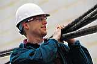

Наредба № 16/31 май 1999г., ДВ. бр. 54 ТУК

Ръчните дейности могат да увредят тялото. Вибрациите от инструментите или уредите могат да предизвикат увреждания на гърба, ставите, коленете и лактите, раменете, китките и на пръстите. Вдигането на тежки предмети може да предизвика увреждане на гърба, херния, защипване на нерви и други. Повтарящите се ръчни дейности могат да предизвикат тендовагинити, "тенисен" лакът или плексит. Продължително стоене прав или на неудобни стоволе могат да доведат до увреждания на гръбнака, разширени вени или проблеми с кръвообръщението. Работа с разтворени ръце или дейности с тежести водят до мускулни болки и увреждания на сухожилията.
Рисковите групи работници включват:
- миньори, строители и земеделски работници, медицински сестри, портиери, домашни прислужници и учители - всички те са с риск за увреждане на гърба;
- горски работници подложени на вибрации;
- осветители и зидари, които получават теносиновит;
| ЧАСТИ НА ТЯЛОТО | ФУНКЦИЯ | ПРИМЕР ЗА УВРЕЖДАНЕ |
|---|---|---|
| Кости | Твърди части, които осигуряват телесна структура | Счупвания и остеоартрити |
| Лигаменти | Здрави еластични тъкани като:
|
|